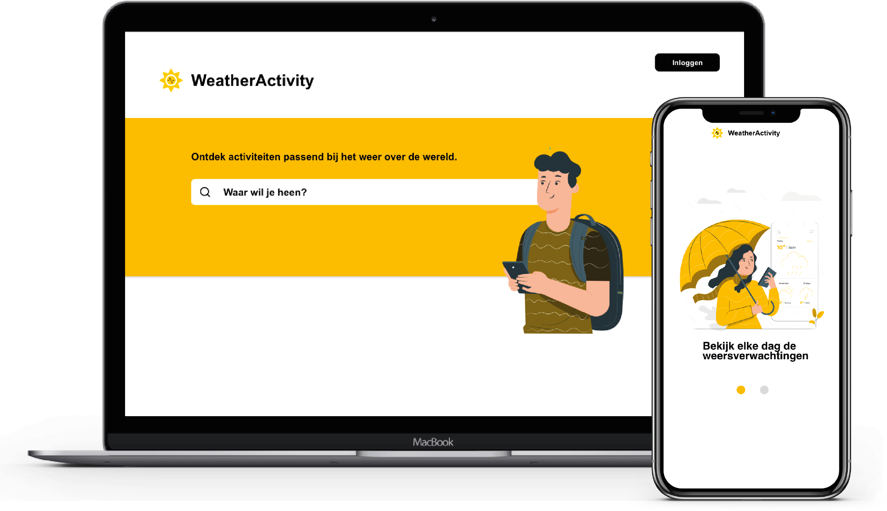
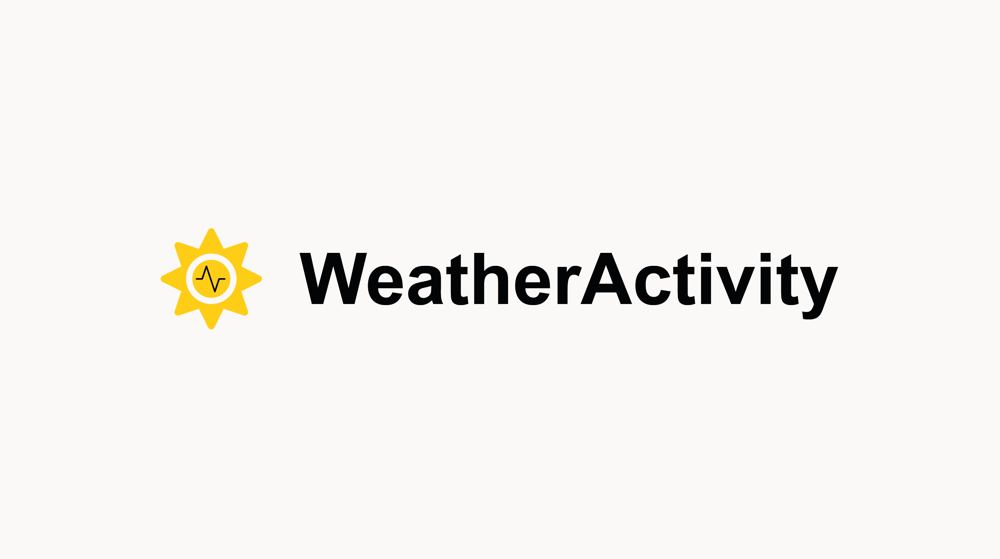
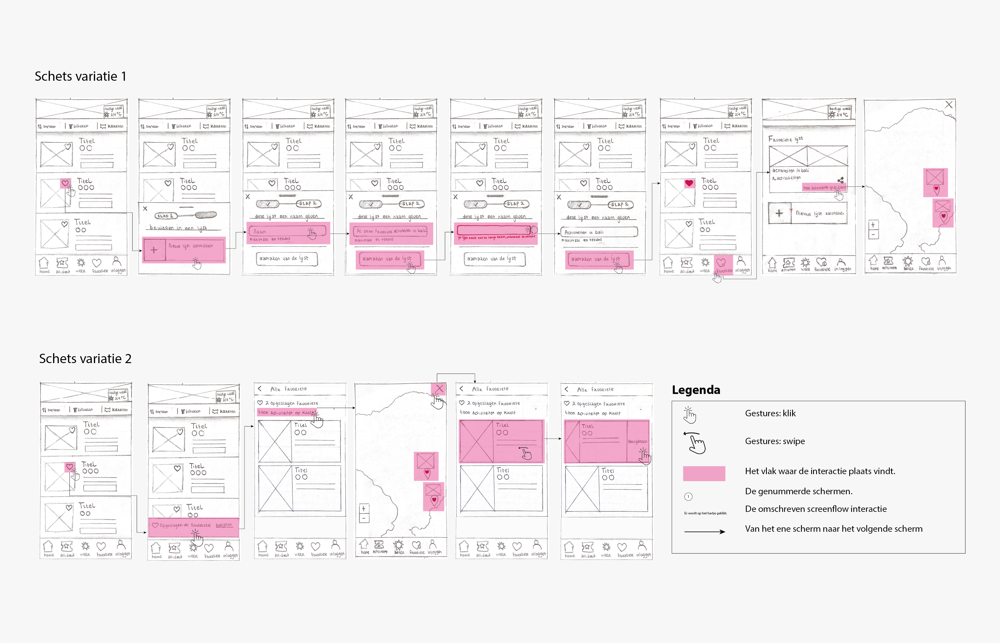
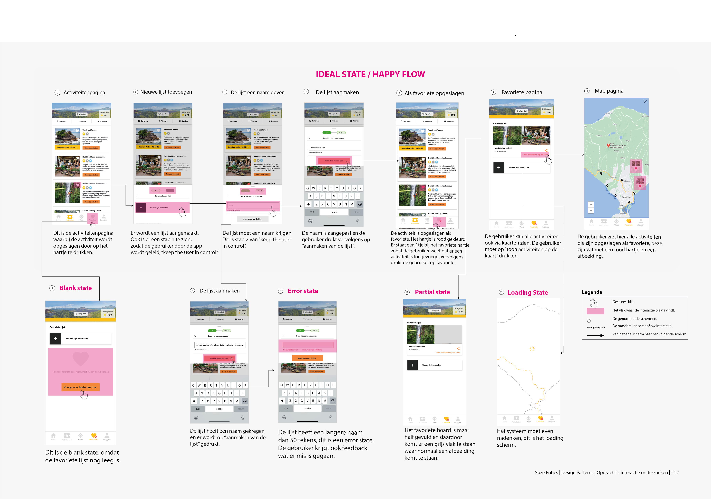
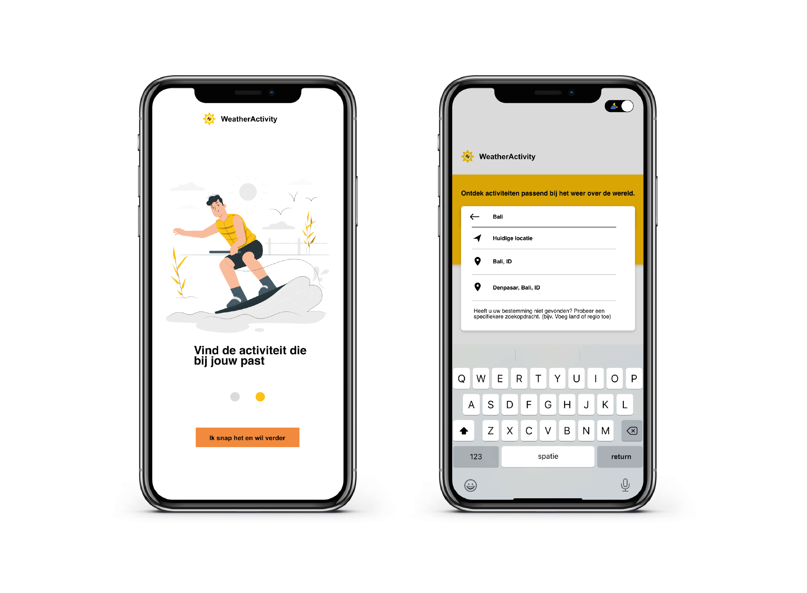
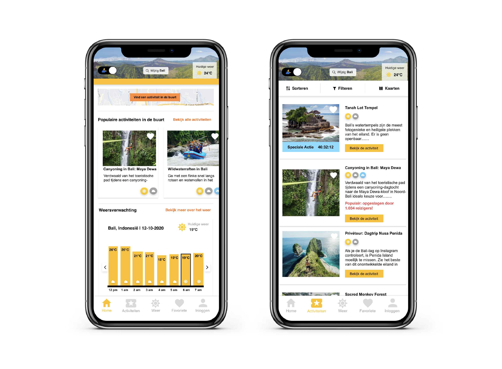
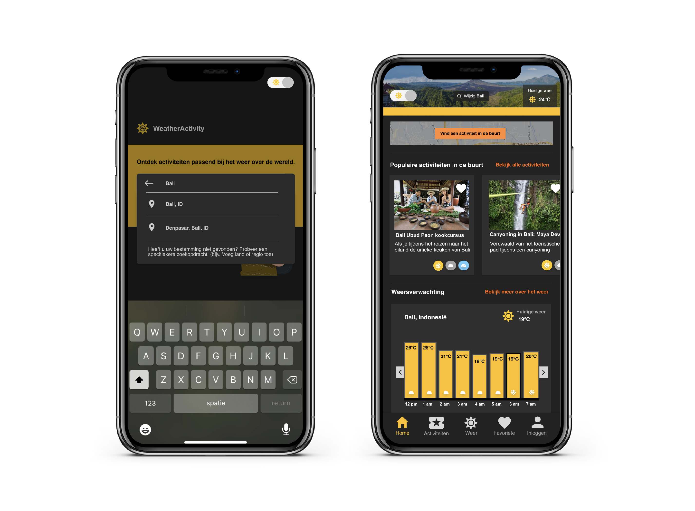

-
 Hogeschool van Amsterdam
Hogeschool van Amsterdam -
 2020
2020 -
 Individueel
Individueel
Weather Activity
Voor Project Web heb ik een 'Multi Device Website' moeten ontwerpen en maken voor op reis. Het prototype moest functioneel zijn zowel voor, tijdens en na de reis. Ten tweede was het belangrijk dat dit protype op meerdere aparaten te gebruiken was.
Concept
Een online app waarbij je activiteiten kunt vinden over de hele wereld die passen bij het weer. De activiteiten op de plek waar je je bevindt worden automatisch aangepast aan het weer. Gebruikers kunnen de activiteiten van te voren opslaan als favoriete.
Logo
Ik heb gekozen voor een zon als positief teken met daarin een hartslag ritme.
Wireflow
Om goed in kaart te krijgen welke schermen ik precies ging uitwerken ben ik begonnen met schetsen maken van mijn wireflow. De schets die ik heb gemaakt is het opslaan/bewaren van een favoriete. Na een aantal keer te hebben geïtereed, heb ik deze digitaal uitwerkt.
Schets wireflow
Digitale schetsen
Prototype
Om deze reis app uit te kunnen testen met gebruikers heb ik een klikbare prototype gemaakt. Wil je mijn gehele prototype zien, neem dan een kijkje hieronder!
(Tip: op sommige plekken in de app kun je naar links of rechts swipe.)
Bekijk mijn gehele prototype   